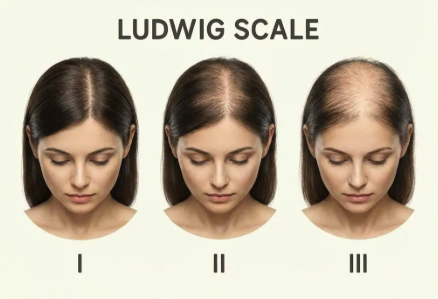
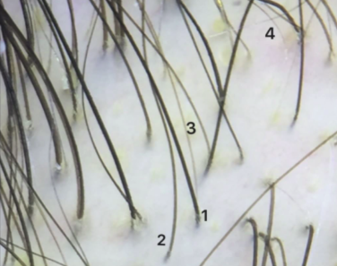

الصلع الوراثي عند النساء Female Androgenetic Alopecia — Female Pattern Hair Loss
أكثر أنواع تساقط الشعر شيوعاً عند النساء — ترقق تدريجي في وسط فروة الرأس مع الحفاظ على خط الشعر الأمامي. The most common type of hair loss in women — gradual thinning across the central scalp with the frontal hairline preserved.
الصلع الوراثي عند النساء مو مرض ومو خطر، لكنه ترقق تدريجي يبدأ من وسط فروة الرأس. الخط الأمامي يبقى محفوظ. السبب: استعداد وراثي + تأثير هرموني. قابل للسيطرة بشكل ممتاز إذا بدأ العلاج مبكراً. Female pattern hair loss isn't a disease or danger — it's gradual thinning that starts in the central scalp. The frontal hairline is preserved. Cause: genetic predisposition combined with a hormonal effect. Highly controllable when treatment starts early.
ما هو الصلع الوراثي عند النساء؟ What is female pattern hair loss?
تساقط الشعر الوراثي عند النساء — أو ما يُعرف علمياً بـ Female Androgenetic Alopecia (FAGA) أو Female Pattern Hair Loss (FPHL) — هو أكثر أنواع تساقط الشعر شيوعاً عند النساء، خاصة في منتصف العمر وبعده. مو مرض، ومو خطر على الصحة، لكنه تغيير تدريجي يحدث في بصيلات الشعر بسبب تفاعل بين الجينات الوراثية والهرمونات. Female Androgenetic Alopecia (FAGA), also called Female Pattern Hair Loss (FPHL), is the most common type of hair loss in women — especially in midlife and beyond. It isn't a disease or a health risk, but it's a gradual change in the hair follicles driven by an interaction between inherited genes and hormones.
ببساطة: شعر النساء لا يتراجع من الأمام مثل الرجال في الغالب. الترقق يحدث في وسط فروة الرأس ويتسع مع الوقت — يبدأ بزيادة عرض فرق الشعر، ثم يتسع تدريجياً ليكشف الفروة عند النظر من الأعلى. Simply put: women's hair usually doesn't recede from the front the way men's does. Thinning happens across the central scalp and widens over time — starting with a wider parting, then gradually exposing the scalp when seen from above.
نقطة مهمة من البداية: النمط الأنثوي مختلف عن الذكوري في الشكل، لكن السبب الأساسي مشابه. التعامل والعلاج يحتاجان خبرة متخصصة لأن الخيارات الدوائية وطريقة المتابعة تختلف. Important from the start: The female pattern looks different from the male one, but the underlying cause is similar. Care requires specialist experience because medication choices and follow-up differ.
كم هو شائع؟ How common is it?
أكثر شيوعاً مما يتوقع كثيرون:More common than most people expect:
- ما يقارب 40% من النساء يلاحظن علامات الترقق قبل سن الخمسينRoughly 40% of women notice signs of thinning before age 50
- النسبة ترتفع بشكل ملحوظ بعد سن اليأس (Menopause)Rates rise noticeably after menopause
- يبدأ في كثير من الحالات في الثلاثينات والأربعيناتIn many cases it starts in the 30s or 40s
- أحياناً يبدأ مبكراً في العشرينات، خاصة عند وجود تاريخ عائلي قويSometimes earlier — in the 20s — especially with a strong family history
في الخليج، النسب مشابهة، وكثيرات لا يطلبن تقييم متخصص لاعتقادهن إن "الترقق طبيعي مع العمر". هذا الاعتقاد يفوّت سنوات يمكن استرجاعها بعلاج بسيط ومبكر. In the Gulf, rates are similar, and many women don't seek a specialist evaluation because they assume thinning is "just aging." That assumption costs years of progress that early, simple treatment could have prevented.
ليش يحدث؟ — العلم بكلمات بسيطة Why it happens — the science, simply
السبب الأساسي حساسية وراثية في بصيلات الشعر تجاه الهرمونات الأندروجينية، رغم إن الصورة عند النساء أكثر تعقيداً من الرجال: The underlying cause is a genetic sensitivity of hair follicles to androgenic hormones — though the picture in women is more complex than in men:
- الاستعداد الوراثي — تاريخ عائلي للصلع الوراثي عند الأم أو الأب يزيد الاحتمال بشكل كبير.Genetic predisposition — a family history of pattern hair loss on either side meaningfully raises the risk.
- الهرمونات الأندروجينية — حتى مع مستوياتها الطبيعية، تأثيرها على البصيلات الحساسة وراثياً يكفي لإحداث الترقق.Androgenic hormones — even at normal levels, their effect on genetically susceptible follicles is enough to cause thinning.
- إنزيم الأروماتاز (Aromatase) — موجود بنسبة أعلى عند النساء في خط الشعر الأمامي، وهذا يفسّر سبب بقاء خط الشعر محفوظاً (بعكس الرجال).Aromatase — present in higher levels along the female frontal hairline, helping explain why the front edge is usually preserved (unlike in men).
- التغيرات الهرمونية الكبيرة — سن اليأس، إيقاف حبوب منع الحمل، أو حالات مثل تكيّس المبايض (PCOS) قد تكون محفّزات.Major hormonal shifts — menopause, stopping oral contraceptives, or conditions like PCOS can act as triggers.
عند النساء اللواتي عندهن استعداد وراثي، البصيلات تنكمش تدريجياً (Miniaturization)، الشعر الناعم القصير يحل محل الشعر الكثيف الطبيعي، ودورة نمو الشعر تقصر مع كل دورة جديدة. In women with the predisposition, follicles gradually miniaturise, fine short hair replaces normal terminal hair, and each new growth cycle becomes shorter than the last.
ملاحظة مهمة: تساقط الشعر الوراثي عند المرأة لا يعني تلقائياً ارتفاع الهرمونات الذكورية. كثيرات يكون عندهن مستوى هرموني طبيعي تماماً. لكن لو كان معه أعراض أخرى — حب شباب شديد، نمو شعر زائد في الجسم، اضطراب الدورة — هنا يجب فحص الهرمونات بدقة، وقد يكون السبب متلازمة تكيّس المبايض أو ما شابه. Important: Female pattern hair loss doesn't automatically mean elevated male hormones. Many women have entirely normal hormone levels. But if it comes with other features — significant acne, excess body hair, irregular cycles — hormones should be evaluated carefully; PCOS or a similar condition may be involved.
كيف يظهر؟ — مقياس Ludwig و Sinclair How it shows up — the Ludwig and Sinclair scales
تساقط الشعر الوراثي عند النساء له نمط مختلف عن الرجال: Female pattern hair loss looks different from the male pattern:
- خط الشعر الأمامي محفوظ في الغالب — لا يحدث تراجع على شكل MThe frontal hairline is preserved in most cases — no M-shaped recession
- الترقق ينتشر في وسط فروة الرأس على شكل "شجرة عيد الميلاد" (Christmas Tree Pattern) عند فتح فرق الشعرThinning spreads through the central scalp in a "Christmas tree pattern" visible at the parting
- التاج يبقى نسبياً أكثف من النمط الرجاليThe crown stays relatively denser than in the male pattern
- التساقط تدريجي، يُلاحظ غالباً عند النظر للفروة من الأعلى أو في الإضاءة القويةLoss is gradual — most often noticed when viewing the scalp from above or under strong light
مقياس Ludwig (الأكثر استخداماً عالمياً)Ludwig scale (the most widely used worldwide)
| المرحلةGrade | الوصفDescription |
|---|---|
| I | ترقق خفيف عند فرق الشعر في الوسط، يُلاحظ بصعوبة.Mild thinning at the central parting — barely noticeable. |
| II | اتساع واضح لفرق الشعر، الفروة تبدو من خلال الشعر، لكن خط الشعر الأمامي محفوظ.Visible widening of the central parting; scalp shows through, but the frontal hairline is preserved. |
| III | ترقق متقدم، الفروة واضحة بشكل كبير في الوسط مع ترقق ممتد.Advanced thinning — the scalp is clearly visible across the central area with extended diffuse loss. |

مقياس Sinclair (تصنيف أكثر تفصيلاً يستخدمه المتخصصون)Sinclair scale (a more granular grading used by specialists)
| الدرجةGrade | الوصفDescription |
|---|---|
| 1 | فرق شعر طبيعي بدون تغيير.Normal parting — no change. |
| 2 | اتساع طفيف ملحوظ لفرق الشعر.Slight, noticeable widening of the parting. |
| 3 | اتساع واضح، الفروة بادية تحت الشعر.Clear widening; scalp visible through the hair. |
| 4 | تساقط منتشر مع فروة مرئية بشكل كبير.Diffuse loss with substantial scalp visibility. |
| 5 | مرحلة متقدمة — تساقط واسع وكثافة منخفضة جداً.Advanced stage — extensive loss and very low density. |
ملاحظة سريرية: التدخل المبكر — في درجة Ludwig I أو Sinclair 2 — يعطي أفضل النتائج. الحالات المتقدمة تستجيب أيضاً للعلاج، لكن الهدف يصبح إيقاف التقدم وتحسين الكثافة، مو استرجاع شعر سنوات سابقة. Clinical note: Early intervention — at Ludwig I or Sinclair 2 — yields the best results. Advanced cases still respond, but the goal shifts to halting progression and improving density, not restoring hair from years past.
علامات قد تلاحظينها:Early signs you might notice:
- فرق الشعر "صار أوسع" في المرآةYour parting "looks wider" in the mirror
- شعر أكثر على الوسادة وفي الفرشاةMore hair on the pillow and brush
- الشعر في الوسط أرفع من الجوانبHair in the center finer than at the sides
- عند جمع الشعر للخلف، تشعرين إن "كمية الشعر" أقل من قبلWhen gathering hair back, the volume feels lower than before
- ضوء واضح يكشف الفروة عند فرق الشعرBright light reveals the scalp at the parting
- ذيل الشعر (Pony tail) أصبح أرفع بشكل ملحوظA noticeably thinner ponytail circumference
كيف نشخّصه؟ How we diagnose it
التشخيص يحتاج طبيب متخصص لأن أنواع تساقط الشعر عند النساء كثيرة ومتشابهة. في الاستشارة نعتمد على: Diagnosis needs a specialist because hair-loss types in women are numerous and overlap. In consultation we rely on:
- التاريخ الطبي والشخصيMedical and personal history — متى بدأ الترقق؟ تاريخ عائلي؟ الدورة الشهرية؟ الولادة، الحمل، حبوب منع الحمل؟ مرحلة سن اليأس؟ حب شباب أو نمو شعر زائد في الجسم؟ — When did thinning start? Family history? Menstrual cycle? Pregnancy, postpartum, oral contraceptives? Menopause status? Acne or excess body hair?
- الفحص السريريClinical examination — تقييم نمط الترقق وحالة فروة الرأس، ووجود أعراض هرمونية مرافقة. — Assessing the thinning pattern, scalp condition, and any accompanying hormonal signs.
-
التنظير (Trichoscopy)Trichoscopy
— جهاز متخصص يكشف العلامات النموذجية للنمط الأنثوي:
— A specialized device that reveals the classic findings of the female pattern:
- تنوع سُمك الشعر — علامة مبكرة وحاسمة (أكثر من 20% فرق بين الشعرات)Hair shaft diameter diversity — an early, decisive marker (more than 20% variation between hairs)
- بصيلات منكمشة (Miniaturization) في وسط فروة الرأسMiniaturised follicles across the central scalp
- زيادة عدد البصيلات الأحادية في الوسطPredominance of single-hair follicular units at midscalp
- زيادة الشعر الناعم القصير (Vellus hairs) عند فرق الشعرIncreased vellus (fine, short) hairs at the parting

تنظير الشعر — تنوع واضح في سُمك الشعرات داخل نفس المنطقة (الفرق بين الشعرة 1 و 4 يفوق 20%): علامة كلاسيكية للصلع الوراثي عند النساء. Trichoscopy — clear hair shaft diameter diversity within the same region (more than 20% difference between hairs 1 and 4): a classic marker of female pattern hair loss. -
تحاليل دم — جزء أساسي عند المرأةBlood work — an essential part for women:
- صورة الدم الكاملة (CBC)Complete blood count (CBC)
- مخزون الحديد (Ferritin)Iron stores (Ferritin)
- وظائف الغدة الدرقية (TSH)Thyroid function (TSH)
- فيتامين D، الزنكVitamin D, Zinc
- عند وجود أعراض هرمونية: التستوستيرون الكلي والحر، DHEA-S، البرولاكتين، أو فحص متلازمة تكيّس المبايضIf hormonal symptoms are present: total and free testosterone, DHEA-S, prolactin, or a PCOS work-up
التفريق المهم: تساقط الشعر الوراثي عند النساء يتشابه أحياناً مع التساقط الكربي (Telogen Effluvium)، الصلع الليفي الجبهي (FFA)، والثعلبة المنتشرة (Alopecia Areata Diffusa). التشخيص الصحيح يفرّق بين خطة علاجية فعّالة وعلاج مهدور. Important differential: female pattern hair loss can resemble telogen effluvium, frontal fibrosing alopecia (FFA), and diffuse alopecia areata. Accurate diagnosis is the difference between an effective treatment plan and wasted effort.
ما الخيارات العلاجية؟ Treatment options
تساقط الشعر الوراثي عند النساء لا يُشفى بشكل نهائي، لكن يمكن إيقاف التقدم وتحسين الكثافة بشكل ملحوظ. الأهم: البدء مبكراً، قبل ما تختفي البصيلات تماماً. Female pattern hair loss can't be permanently cured, but progression can be stopped and density can be noticeably improved. The key: start early, before follicles disappear.
الخط الأول — أدوية موضعية:First line — topical medication:
- المينوكسيديل الموضعي 5%Topical Minoxidil 5% — العلاج الأول والأكثر دعماً بالأدلة، يُستخدم مرة أو مرتين يومياً — the most evidence-supported first-line option, applied once or twice daily
- المينوكسيديل 2% — كبديل عند الحساسية أو ظهور آثار جانبية موضعيةMinoxidil 2% — an alternative if topical sensitivity or side effects appear
الخط الثاني — أدوية فموية تحت إشراف متخصص:Second line — oral medication under specialist care:
- المينوكسيديل الفموي بجرعة منخفضة (Low-dose Oral Minoxidil) — أدلة قوية حديثة، فعّال جداًLow-dose oral Minoxidil — strong recent evidence, highly effective
- السبيرونولاكتون (Spironolactone)Spironolactone — مضاد للأندروجين، شائع للنساء بفعالية عالية — an anti-androgen, commonly used in women with strong effect
- الفيناسترايدFinasteride / الدوتاستيريدDutasteride — يُستخدم في حالات محددة، خاصة بعد سن اليأس، ويتطلب موافقة مستنيرة قبل سن اليأس بسبب التحذيرات في حالة الحمل — used in selected cases, particularly post-menopause; requires informed consent in pre-menopausal women due to pregnancy contraindications
- حبوب منع الحمل المركّبة بمضادات الأندروجين — في حالات مختارة بقرار من الطبيبCombined oral contraceptives with anti-androgenic effect — in selected cases, by physician decision
معالجة الأسباب المرافقة:Addressing co-existing causes:
- علاج تكيّس المبايض (PCOS) إن وُجدTreating PCOS if present
- تصحيح اضطراب الغدة الدرقيةCorrecting any thyroid disorder
- علاج نقص الحديد، فيتامين D، الزنكCorrecting iron, vitamin D, and zinc deficiencies
- تنظيم الدورة الشهرية إذا كانت مضطربةStabilising the menstrual cycle if irregular
الإجراءات الداعمة:Supporting procedures:
- حقن البلازما (PRP)PRP
- الميكرونيدلينغMicroneedling
- الميزوثيرابيMesotherapy
- LLLT — الليزر منخفض المستوىLLLT — low-level laser therapy
- الإكسوسوماتExosomes — في حالات مختارة — in selected cases
الخيار الجراحي:Surgical option:
- زراعة الشعر — للحالات المستقرة، بعد استنفاد الخيارات الدوائية ووجود منطقة مانحة كافيةHair transplant — for stable cases, after medical options have been exhausted and an adequate donor area is confirmed
الخطة الفعلية ما هي علاج واحد. غالباً نجمع علاج موضعي + علاج فموي + إجراء داعم، وكل خطة تتفصّل حسب العمر، الحالة الهرمونية، شدة التساقط، وتفضيلات المريضة. The real plan isn't a single drug. We usually combine topical + oral + a supporting procedure, with the plan tailored to age, hormonal status, severity, and the patient's preferences.
اقرأ أيضًا: دليل تساقط الشعر عند النساء في الرياض — تشخيص مفصّل ومراجعة مُدرَّجة بالأدلة لكل خيار علاجي. See also: the guide to women’s hair loss in Riyadh — detailed work-up and an evidence-graded review of every treatment option.
التوقعات الواقعية Realistic expectations
شفافية كاملة:Full transparency:
- العلاج يحتاج 6 إلى 12 شهر لرؤية نتائج واضحةTreatment needs 6 to 12 months to show clear results
- النتائج تعتمد على عمرك، شدة الترقق، حالتك الهرمونية، والالتزام بالعلاجResults depend on age, severity of thinning, hormonal status, and adherence
- التوقف عن العلاج = عودة التساقط تدريجياًStopping treatment = gradual return of hair loss
- البصيلات الميتة تماماً ما ترجع — لذلك البدء المبكر مهمFully dead follicles don't come back — that's why early action matters
- الهدف الواقعي: إيقاف التقدم وتحسين الكثافة، أكثر من "استرجاع الشعر اللي كان قبل 10 سنوات"A realistic goal: halt progression and improve density — not restore hair from a decade ago
- معظم الحالات تستجيب بشكل جيد لو بدأنا في المراحل الأولى (Ludwig I–II)Most cases respond well when treatment starts at early stages (Ludwig I–II)
- الحالات المتقدمة (Ludwig III) تتطلب خطة أعمق وقد تستفيد من الجمع بين علاج طبي وزراعةAdvanced cases (Ludwig III) need a deeper plan and may benefit from combining medical treatment with transplantation
- ما يوجد علاج "سحري" يعطي نتيجة في شهر — أي وعد كذا غير دقيقThere is no "miracle cure" delivering results in a month — any such promise isn't accurate
متى تشوف الطبيب؟ When to see a doctor
كلما أبكر، كان أفضل. لا تنتظري حتى يصبح الفرق واضح للجميع. The sooner the better. Don't wait until the change is visible to everyone.
علامات تستدعي زيارة طبيب فوراً:Signs that warrant an immediate visit:
- اتساع ملحوظ لفرق الشعر خلال أشهرVisible widening of the parting over a few months
- تساقط مع أعراض هرمونية (حب شباب، نمو شعر زائد، اضطراب الدورة)Hair loss alongside hormonal symptoms (acne, excess body hair, irregular cycles)
- تساقط حاد وسريع خلال أسابيع — قد يكون نوع آخر يحتاج تدخل سريعHeavy, rapid shedding within weeks — could be a different type needing urgent care
- تساقط مع حكة، احمرار، أو ألم في الفروةShedding with scalp itching, redness, or pain
- ظهور بقع صلعاء أو تراجع في خط الشعر الأمامي (هذا قد يكون FFA، حالة مختلفة)Bald patches or recession of the frontal hairline (could be FFA, a different condition)
- تساقط مع أعراض جسدية (إعياء، ضعف، تغير في الوزن)Loss with systemic symptoms (fatigue, weakness, weight change)
التقييم المبكر يفتح خيارات أوسع، ويوفّر سنوات من الترقق غير الضروري. Early assessment opens up more options and saves years of unnecessary thinning.
الخطوة التالية The next step
تساقط الشعر الوراثي عند النساء قابل للسيطرة بشكل ممتاز عند البدء المبكر. الخطوة الصح: تشخيص دقيق وخطة فردية، مو منتجات عشوائية. Female pattern hair loss is highly controllable when treatment starts early. The right step: an accurate diagnosis and an individualised plan — not random products.
احجز استشارتك الآن ← Book your consultation now →المعلومات في هذه الصفحة لأغراض تثقيفية، ولا تغني عن الاستشارة المباشرة. كل حالة لها قصتها الخاصة. آخر مراجعة: مايو 2026 — د. محمد القحطاني This information is for educational purposes and does not substitute for direct consultation. Every case has its own story. Last reviewed: May 2026 — Dr. Mohammed AlQahtani